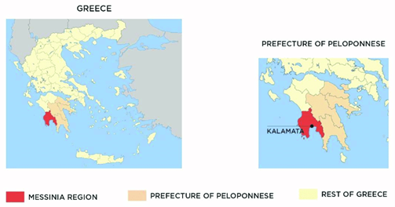
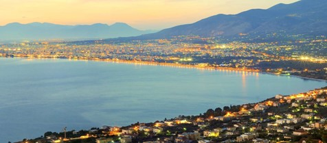

Visa Requirements
Participants who require a visa to travel to Greece are strongly advised to begin the application process well in advance, as processing times may vary depending on the country of application and the time of year.
Detailed and up-to-date information on visa requirements for entering Greece can be accessed here.
If you need assistance with your visa application, such as an official invitation letter or other supporting documentation, please contact the conference secretariat. We are committed to supporting all participants through this process and ensuring timely preparation for your travel.
For visa support, please reach out to:
Mrs. Spyridoula Kouna
Conference Secretariat
Email: s.kouna@esdalab.ece.uop.gr
When contacting the secretariat, kindly include the following information to expedite your request:
- Full name (as in passport)
- Affiliation and address
- Passport number
- Dates of travel
- Title of your accepted paper or reason for attending
- A copy of your conference registration receipt
Please note that the conference organizers cannot influence the decision of the consular authorities, nor guarantee the issuance of a visa. It is the responsibility of the participant to apply for a visa in a timely manner and provide all required documentation to the relevant embassy or consulate.
Please also review the conference's cancellation policy for visa applicants.
Venue city: Kalamata, Messinia - Greece
The City of Kalamata
Kalamata, located in the southern part of Greece on the Peloponnese peninsula, is a picturesque coastal city renowned for its natural beauty, rich history, and cultural heritage. The city is famous for its production of Kalamata olives, which are celebrated worldwide for their unique flavor and quality
Surrounded by the deep blue waters of the Messenian Gulf and backed by the Taygetos mountain range, Kalamata boasts stunning landscapes that attract visitors seeking both relaxation and outdoor adventures. Its historic old town features narrow cobblestone streets, charming Byzantine churches, and traditional tavernas serving delicious Greek cuisine.
Visitors to Kalamata can explore ancient ruins, such as the impressive fortress of Kalamata Castle, or enjoy leisurely strolls along the scenic waterfront promenade. The city's vibrant cultural scene includes museums, art galleries, and frequent festivals celebrating music, dance, and local traditions.
With its blend of natural beauty, cultural heritage, and culinary delights, Kalamata offers a delightful Mediterranean experience for travelers seeking to immerse themselves in the essence of Greece.
The City of Kalamata

Geography
Kalamata, nestled in the heart of the Messenian Gulf in the southern Peloponnese region of Greece, boasts a diverse and captivating geography. To the east, the city is embraced by the towering peaks of the Taygetos mountain range, offering stunning vistas and opportunities for outdoor adventures such as hiking and mountain biking. To the west lies the azure expanse of the Messenian Gulf, with its inviting beaches and sparkling waters perfect for swimming, snorkeling, and sailing. The fertile Messenian plain stretches to the north, blanketed with olive groves, vineyards, and citrus orchards, showcasing the region's agricultural richness. Kalamata's geography seamlessly blends rugged mountains, pristine coastline, and verdant valleys, creating a breathtaking backdrop for both residents and visitors alike.
Climate
Kalamata enjoys a Mediterranean climate characterized by hot, dry summers and mild, wet winters, making it an inviting destination year-round. During the summer months from June to August, temperatures typically soar, with highs averaging around 30 to 35°C (86 to 95°F). The city basks in abundant sunshine, perfect for lazy days at the beach or exploring its historic sites. The summer evenings offer a pleasant respite from the heat, with cooler temperatures and gentle sea breezes providing relief. Winters, from December to February, are milder compared to northern Europe, with temperatures ranging from 10 to 15°C (50 to 59°F). While rainfall is more common during this season, it tends to be moderate, and sunny days still prevail. Spring and autumn bring mild temperatures, making them ideal seasons for outdoor activities and sightseeing.

Conference hosting facilities & infrastructure
IEEE ISVLSI 2025 will be hosted in Elite City Resort. It has 5 conference room and conference facilities for supporting conferences with up to 5.000 participants.
Elite City Resort Kalamata
The Elite City Resort is at the heart of Messinian Bay at the foot of Mountain Taygetos, just a few minutes from the seaside. It includes a large swimming pool and a restaurant with a decked terrace. All rooms are decorated in a modern, minimal style. Guests can relax by the large swimming pool while enjoying a drink. Ef Zin Restaurant serves Greek and international dishes prepared with fresh, local ingredients. The commercial center of Kalamata is only 2.5 miles away, with a variety of restaurants, cafeterias, bars and shops. The excellent location is ideal not only for tourists, but for business travelers as well.
To access special accommodation rates in Elite City for IEEE ISVLSI 2025, email info@elite.com.gr and mention ISVLSI 2025.
Elite City Resort
Conference Center and hosting facilities: